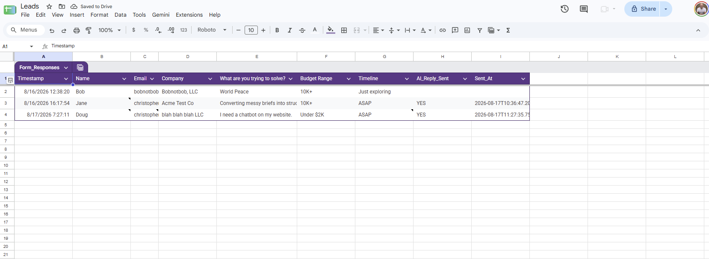
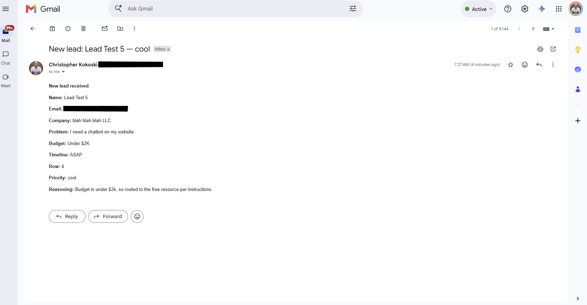
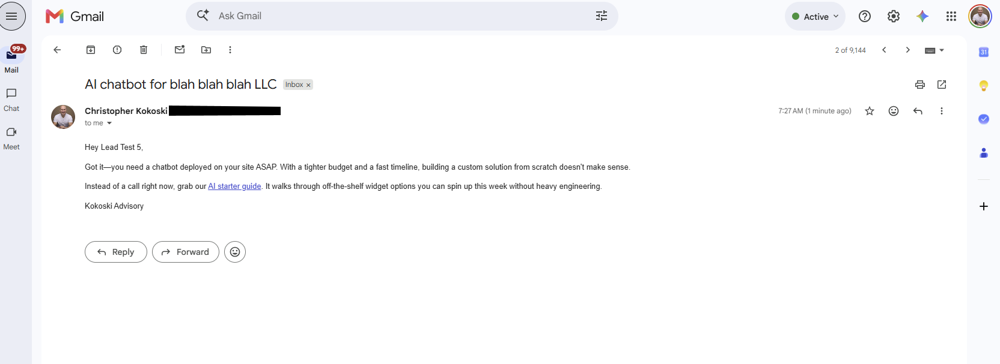

Build Lab / AI agent · No-code automation Shipped
The Speed-to-Lead Responder.
An AI agent that reads an inbound lead, decides how to respond, and replies in under a minute—while most businesses take hours, sometimes days. Every lead is triaged hot, warm, or cool, with the agent's reasoning attached.
The demo
The problem
Answer a new lead inside five minutes and you convert dramatically better than answering hours later—but most businesses take hours, sometimes days. That gap is the whole business case. The fix isn't a faster human; it's a system that never leaves a lead waiting.
The architecture
Built on Google Forms, Google Sheets, Apps Script, Make, and Gemini. Six steps:
- 01Lead arrives
A form submission captures name, company, the problem in their own words, budget, and timeline.
- 02Webhook fires
The submission triggers the Make scenario instantly—no polling, no batch delay.
- 03Guard upstream
Incomplete submissions are blocked before the model ever runs, so a customer never receives an email full of blanks.
- 04The model reads the lead
Gemini reads the actual words—not just field values—and decides how to respond.
- 05The agent decides
This is what makes it an agent instead of a mail merge: a lead under budget gets a polite decline that names their constraint, points to a resource, and leaves the door open.
- 06Score and log
Every lead lands in the sheet scored hot, warm, or cool—with the reason the agent decided that way.
Operating cost: about two-tenths of a cent per lead in model spend, with capacity for roughly 1,600 leads a month on the base plan.
Under the hood






What it demonstrates
Judgment automated with guardrails: the agent makes a real decision per lead, failure is handled upstream, and every decision is logged with its reasoning so a person can audit it. The same enablement pattern applies to any inbox-shaped process.
Slow response times costing you business?